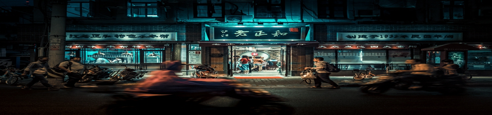
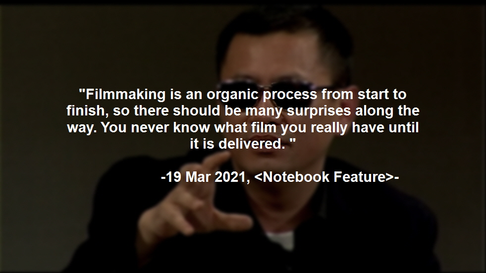
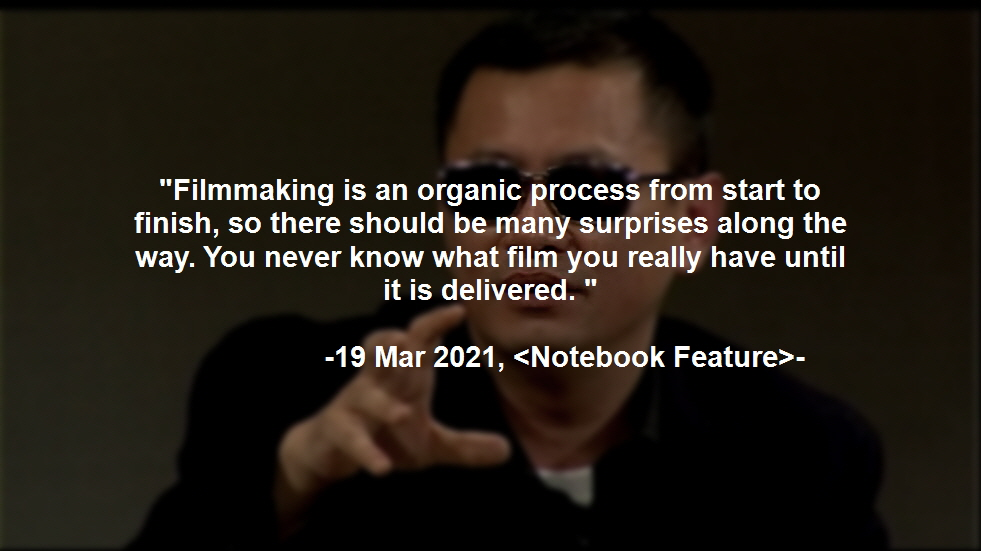

Wong Kar-wai (born 17 July 1958) is a Hong Kong film director, screenwriter, and producer. His films are characterised by nonlinear narratives, atmospheric music, and vivid cinematography involving bold, saturated colours. A pivotal figure of Hong Kong cinema, Wong is considered a contemporary auteur, and ranks third on Sight & Sound's 2002 poll of the greatest filmmakers of the previous 25 years. His films frequently appear on best-of lists domestically and internationally.

Wong is known for producing art films focussed on mood and atmosphere, rather than following convention. is general style is described by Teo as "a cornucopia overflowing with multiple stories, strands of expression, meanings and identities: a kaleidoscope of colours and identities". Structurally, Wong's films are typically fragmented and disjointed, with little concern for linear narrative, and often with interconnected stories.
Key to Wong's films is the visual style, which is often described as beautiful and unique. The colours are bold and saturated, the camerawork swooning, resulting in what Brunette calls his "signature visual pyrotechnics". One of his trademarks is the use of step-printing, which alters film rates to hard blocks of primary colour into iridescent streaks of light."
*source : Wikipedia "Wong Kar-wai" (https://en.wikipedia.org/wiki/Wong_Kar-wai#Influences)

 
